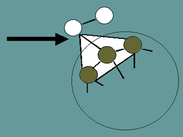

The External Process
Individuals can be influenced by the information passed by, and by the observed actions of, other individuals. The theories describing these processes are known as bandwagon theories. Essentially these are feedback processes where increases in the number of adopters in the population generates information which is passed back to the rest of the population, either directly or indirectly, which affects the pressure on individuals to adopt the innovation. In our model, the external process is a distinct component that acts to alter the profitability or perceived profitability of the product.
Fad theory of bandwagons describes the situation where the information concerning the profitability does not influence the adoption decision. It is which people within the population that have adopted that generates the pressure to adopt. The pressure can be negative or positive (following or avoiding trends) and the influencing members of the population can be highly specific or general. Examples of this phenomenon are threats of lost legitimacy, i.e. needing to demonstrate conformity or nonconformity; and competitive pressures / individuals must adopt or potentially lose out.
Learning theories of bandwagons refer to the situation where there is incomplete information concerning an innovation. Before adoption, the individuals need to acquire more information about the innovation from other individuals in the social network. The profitability is then revised up or down depending upon the information received concerning the innovation.
In our model we incorporate the concepts described above along with social networks constructed of a core of highly interconnected individuals surrounded by a periphery of individuals with a lower level of interconnections. This 'island' structure has been used in a number of studies, [4, 5], and represents structural features present in real populations. The core represents groups of individuals who mutually exchange information on a particular innovation on a frequent basis such as groups of friends, colleagues, etc. The periphery represents more casual contacts. This elemental structure allows experiments to be performed on the effects of details of the structure and identify the basic characteristics of social networks encountered in real populations.
The population with the linkages defining with whom the individuals communicate created. The process of adoption in the population is then as follows. The agents are individually assigned threshold levels of utility, representing how desirable a product has to be to different customers before they adopt. Each also has its individual internal component for the cognitive process which represents the individual's assessment of the desirability of the product. Advertising can be used to supply knowledge of the product into the population. This knowledge then passes through the social network, due to the learning bandwagon process. This increases the utility or perceived utility of the product to each individual. Further advertising adds more information. Eventually individuals, who perceive the utility of the product is high enough to exceed their thresholds, adopt the product. Fad bandwagon processes then add to the process, affecting the utility depending on the numbers of adopters in the population and the influence fads have on the individual.
We are then in the position to test different scenarios, figure 2 shows an example of the simulation running. We can test the effect of just considering fads or learning. We can also test the effects of varying the number of linkages that exist between individuals in the core and the peripheries, and we can test the effect of introducing uncertainty into the interpretation of the bandwagon pressures.
|
||||||||||||||||
|
|
||||||||||||||||
Fig 2. Movie of the spread of an innovation. The green squares represent individual customers. Core networks can be seen with mutual cross-linkages. A white dot on the customer indicates adoption of the product.
One of the first observations is that the extent of the diffusion process is fundamentally determined by the distribution of thresholds. The diffusion process terminates when the increment in bandwagon pressure is smaller than that needed to push the lowest remaining non-adopter over its threshold. In general, if the threshold distribution within the population is widely spread, the chance of an early termination is increased. Either a less extensive diffusion should be anticipated, or somehow the bandwagon pressure must be increased or the efficiency must be increased. Assessment of the population's thresholds and its distribution is therefore important in planning marketing strategy.
Increases in the level of connectivity in the periphery has little effect on the adoption in the cores. The higher the level of uncertainty, though, the higher the extent of the diffusion in the core. In the periphery, the higher the level of connectivity and the higher the levels of uncertainty, the more extensive the diffusion. We also see that although increased linkage in the periphery leads to increased adoption, there is a decreasing return. From a marketing strategy point of view, increasing the amount of communications has a direct influence on the adoption process but there is a diminishing return on this effort - this is likely to be an optimum level of marketing investment.
We also examined the extent of the adoption within the core structures, with different random arrangements of linkage to the periphery members. In this experiment, we observed that for a set number of links, there can be a significant difference in the extent of the diffusion. Why is this? On analysis, it appears that the spread of an adoption is highly influenced by the existence of key members within the population at the boundary of the core and periphery. Higher levels of diffusion into the periphery were observed when connections were made between a number of periphery agents and a core agent and when the threshold of a periphery agent connected to a core agent was low. These circumstances have been identified by other workers [3], who have shown that these features of the social network have a significant effect on the efficiency of the diffusion process. A measure of the likely ease of diffusion can therefore be made by the identification of these features in a real population. Alternatively marketing strategy could be aimed at artificially creating them by means of artificially lowering thresholds, through targeted advertising or by artificially increasing connections between key individuals within the population by means of marketing tools such as rewards for getting your friends to purchase a product.

Fig 3. Arrow shows section of the population with the key structure allowing wider spread adoption. The dark grey circles represent members of one of the cores and the white circles some of the periphery members
Finally a series of experiments were performed on the population with the assumption of learning being the origin of the bandwagon pressure. Here learning is simulated by the exchange of knowledge between individuals about an innovation. The thresholds within the populations were assigned as with the fad simulations. After performing the same analyses as in the fad simulations, we find that, the extent of diffusion as a function of peripheral connectivity follows similar trends as with the fad scenario. However, the diffusion extent in both the core and the periphery are reduced. The key members at the boundary of the core and periphery again have a profound effect on the efficiency of the diffusion process and its final extent.
© Copyright British Telecommunications plc 1999